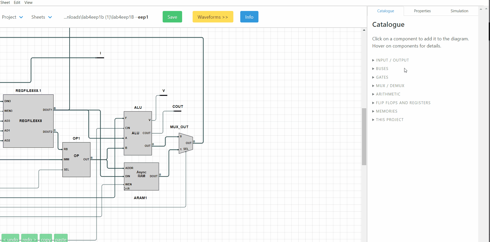

Issie
Project information
Interactive Schematic Simulator and Integrated Editor (ISSIE) is an application for digital circuit design and simulation. Worked in a team of 6 to rewrite and upgrade the DrawBlock, which is the module responsible for rendering the schematics the user interacts with. Our work was selected as the highest quality from the 9 teams who completed this project, and was merged into the main ISSIE codebase.
My role was focused on the logic for representing and routing wires between different symbols. Some notable improvements included re-implementing the existing wire type to reduce memory consumption by a factor of 4, and extending the routing logic work in any orientation possible.